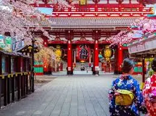
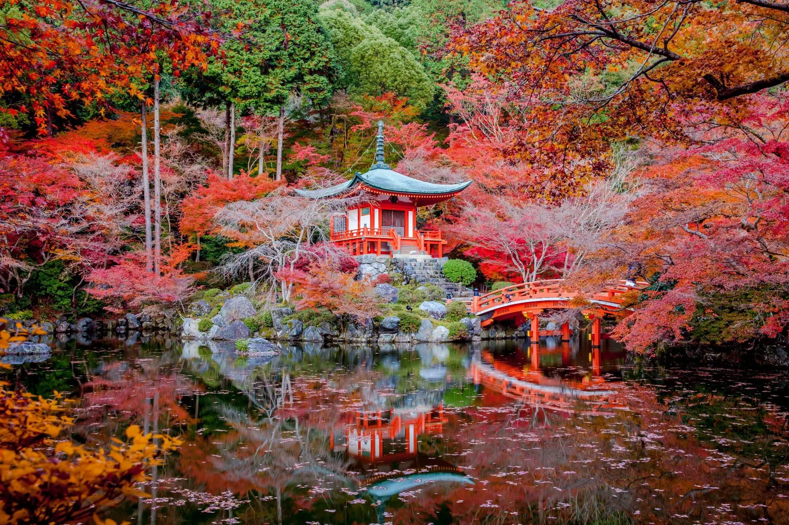

Collections
-

- 
-

- 
why
Ervaar de rijke cultuur en geschiedenis van Japan in ons museum. Onze collectie omvat prachtige kunstwerken, traditionele kleding, wapens en meer. Leer over de samurai, geisha's en de keizerlijke dynastieën. Ervaar ook de moderne Japanse cultuur door onze tentoonstellingen over populaire anime en manga. We zijn zeker dat je zult genieten van je bezoek aan ons museum en zult vertrekken met een dieper begrip en waardering voor de Japanse cultuur.
what
Onze collectie laat u kennismaken met de rijke cultuur en geschiedenis van Japan. Onze collectie bevat prachtige kunstwerken, traditionele kleding, wapens en meer. Leer over de samurai's, geisha's en de keizerlijke dynastieën. Onze tentoonstellingen over de moderne Japanse cultuur, zoals populaire anime en manga, geven u een compleet beeld van de Japanse cultuur. We zijn ervan overtuigd dat u zult genieten van uw bezoek en zult vertrekken met een groter begrip en waardering voor de Japanse cultuur.